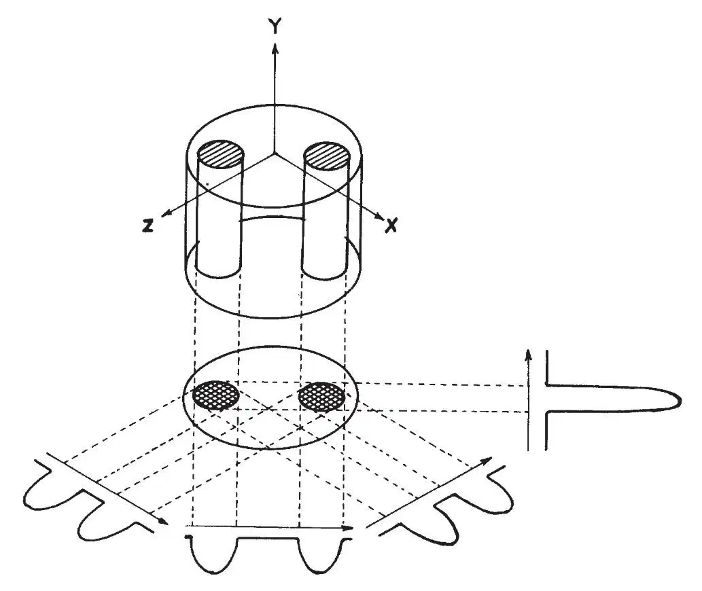
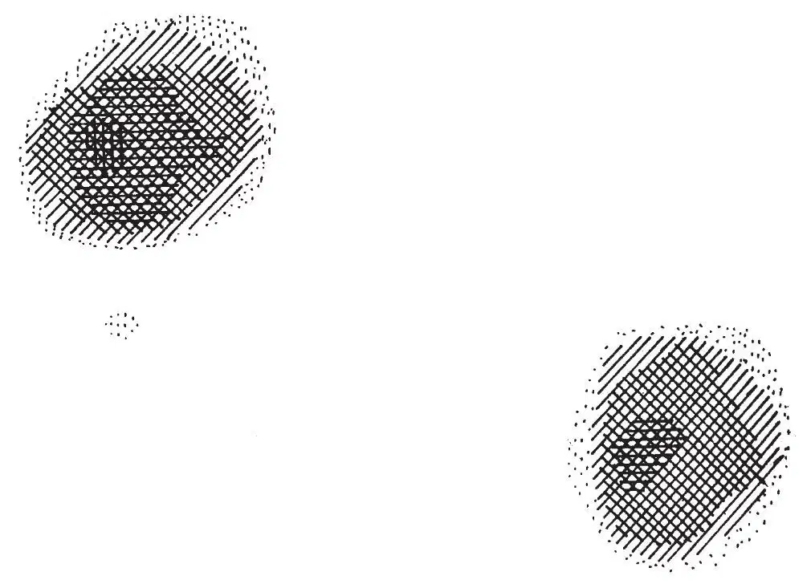
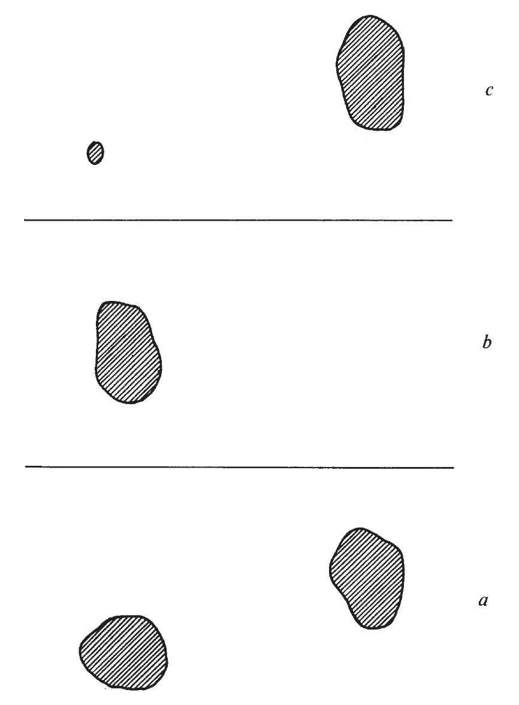

中文
中文P. C. Lauterbur
Editor’s Note
Physicists in the 1940s learned to exploit the response of nuclear spins to applied magnetic fields to probe the structure of solids and liquids. A magnetic field splits the energies of spin states of a nucleus, and radio-frequency radiation can induce transitions between them. Because different nuclei absorb energy at different frequencies, and because the chemical environment also influences this frequency, the technique of nuclear magnetic resonance (NMR) can be used to probe the chemical structure of a sample. Here chemist Paul Lauterbur shows how to adapt this technique to produce detailed spatial images. The technique, known now as magnetic resonance imaging (MRI), is used ubiquitously in basic and applied science, especially medicine. In 2003 Lauterbur shared a Nobel Prize with Peter Mansfield, who developed methods for analysing MRI signals. 中文
AN image of an object may be defined as a graphical representation of the spatial distribution of one or more of its properties. Image formation usually requires that the object interact with a matter or radiation field characterized by a wavelength comparable to or smaller than the smallest features to be distinguished, so that the region of interaction may be restricted and a resolved image generated. 中文
This limitation on the wavelength of the field may be removed, and a new class of image generated, by taking advantage of induced local interactions. In the presence of a second field that restricts the interaction of the object with the first field to a limited region, the resolution becomes independent of wavelength, and is instead a function of the ratio of the normal width of the interaction to the shift produced by a gradient in the second field. Because the interaction may be regarded as a coupling of the two fields by the object, I propose that image formation by this technique be known as zeugmatography, from the Greek ζευγμα, “that which is used for joining”. 中文
The nature of the technique may be clarified by describing two simple examples. Nuclear magnetic resonance (NMR) zeugmatography was performed with 60 MHz (5 m) radiation and a static magnetic field gradient corresponding, for proton resonance, to about 700 Hz cm–1. The test object consisted of two 1 mm inside diameter thin-walled glass capillaries of H2O attached to the inside wall of a 4.2 mm inside diameter glass tube of D2O. In the first experiment, both capillaries contained pure water. The proton resonance line width, in the absence of the transverse field gradient, was about 5 Hz. Assuming uniform signal strength across the region within the transmitter-receiver coil, the signal in the presence of a field gradient represents a one-dimensional projection of the H2O content of the object, integrated over planes perpendicular to the gradient direction, as a function of the gradient coordinate (Fig. 1). One method of constructing a two-dimensional projected image of the object, as represented by its H2O content, is to combine several projections, obtained by rotating the object about an axis perpendicular to the gradient direction (or, as in Fig. 1, rotating the gradient about the object), using one of the available methods for reconstruction of objects from their projections1–5. Fig. 2 was generated by an algorithm, similar to that of Gordon and Herman4, applied to four projections, spaced as in Fig. 1, so as to construct a 20×20 image matrix. The representation shown was produced by shading within contours interpolated between the matrix points, and clearly reveals the locations and dimensions of the two columns of H2O. In the second experiment, one capillary contained pure H2O, and the other contained a 0.19 mM solution of MnSO4 in H2O. At low radio-frequency power (about 0.2 mgauss) the two capillaries gave nearly identical images in the zeugmatogram (Fig. 3a). At a higher power level (about 1.6 mgauss), the pure water sample gave much more saturated signals than the sample whose spin-lattice relaxation time T1 had been shortened by the addition of the paramagnetic Mn2+ ions, and its zeugmatographic image vanished at the contour level used in Fig. 3b. The sample region with long T1 may be selectively emphasized (Fig. 3c) by constructing a difference zeugmatogram from those taken at different radio-frequency powers. 中文

Fig. 1. Relationship between a three-dimensional object, its two-dimensional projection along the Y-axis, and four one-dimensional projections at 45° intervals in the XZ-plane. The arrows indicate the gradient directions. 中文

Fig. 2. Proton nuclear magnetic resonance zeugmatogram of the object described in the text, using four relative orientations of object and gradients as diagrammed in Fig. 1. 中文

Fig. 3. Proton nuclear magnetic resonance zeugmatograms of an object containing regions with different relaxation times. a, Low power; b, high power; c, difference between a and b. 中文
Applications of this technique to the study of various inhomogeneous objects, not necessarily restricted in size to those commonly studied by magnetic resonance spectroscopy, may be anticipated. The experiments outlined above demonstrate the ability of the technique to generate pictures of the distributions of stable isotopes, such as H and D, within an object. In the second experiment, relative intensities in an image were made to depend upon relative nuclear relaxation times. The variations in water contents and proton relaxation times among biological tissues should permit the generation, with field gradients large compared to internal magnetic inhomogeneities, of useful zeugmatographic images from the rather sharp water resonances of organisms, selectively picturing the various soft structures and tissues. A possible application of considerable interest at this time would be to the in vivo study of malignant tumours, which have been shown to give proton nuclear magnetic resonance signals with much longer water spin-lattice relaxation times than those in the corresponding normal tissues6. 中文
The basic zeugmatographic principle may be employed in many different ways, using a scanning technique, as described above, or transient methods. Variations on the experiment, to be described later, permit the generation of two- or three-dimensional images displaying chemical compositions, diffusion coefficients and other properties of objects measurable by spectroscopic techniques. Although applications employing nuclear magnetic resonance in liquid or liquid-like systems are simple and attractive because of the ease with which field gradients large enough to shift the narrow resonances by many line widths may be generated, NMR zeugmatography of solids, electron spin resonance zeugmatography, and analogous experiments in other regions of the spectrum should also be possible. Zeugmatographic techniques should find many useful applications in studies of the internal structures, states, and compositions of microscopic objects. 中文
(242, 190-191; 1973)
P. C. Lauterbur
Department of Chemistry, State University of New York at Stony Brook, Stony Brook, New York 11790
Received October 30, 1972; revised January 8, 1973.
References:
1. Bracewell, R. N., and Riddle, A. C., Astrophys. J., 150, 427 (1967).
2. Vainshtein, B. K., Soviet Physics-Crystallography, 15, 781 (1971).
3. Ramachandran, G. N., and Lakshminarayan, A. V., Proc. US Nat. Acad. Sci., 68, 2236 (1971).
4. Gordon, R., and Herman, G. T., Comm. Assoc. Comput. Mach., 14, 759 (1971).
5. Klug, A., and Crowther, R. A., Nature, 238, 435 (1972).
6. Weisman, I. D., Bennett, L. H., Maxwell, Sr., L. R., Woods, M. W., and Burk, D., Science, 178, 1288 (1972).